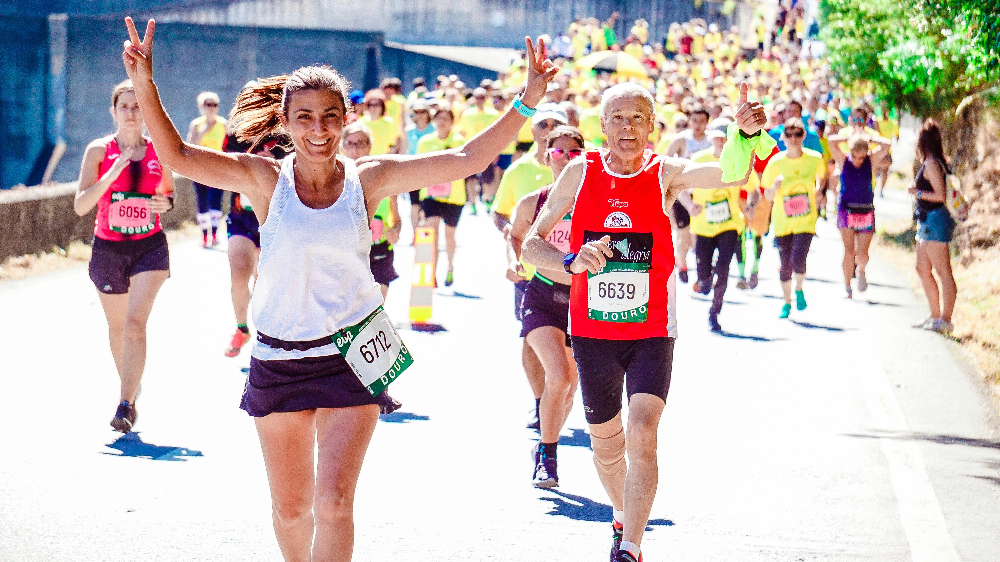
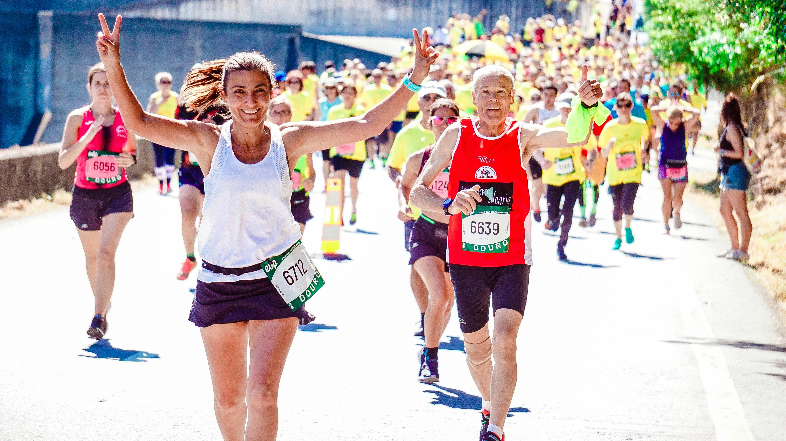

Quem Somos
Somos uma startup brasileira que atua com foco na bioeconomia, unindo ciência e saberes tradicionais para regenerar os biomas amazônicos e do Cerrado por meio da inovação.
Nosso Produto: Biofrutix
Um repositor eletrolítico natural com probióticos e frutos da biodiversidade brasileira. Hidrata, nutre e conecta você com a natureza.
💧 Repositor natural de eletrólitos
🌿 Ingredientes da biodiversidade brasileira
🧫 Probióticos vivos que fortalecem sua microbiota
⚡ Energia e vitalidade com sabor da floresta
Movimento Raízes do Futuro
Um chamado à regeneração! Reunimos ciência, reflorestamento e agricultura sintrópica em um só movimento.

 
